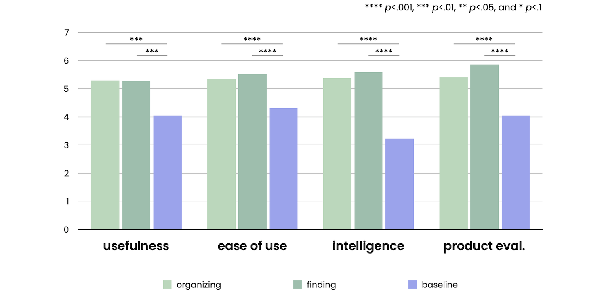
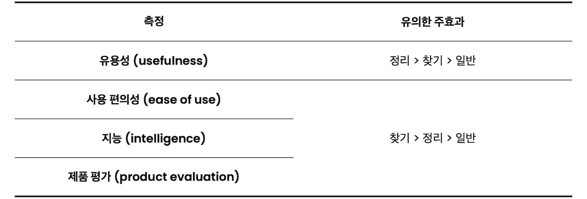

Robotic Cabinets
로보틱 캐비닛의 지능화 방식에 따른 사용자의 인식 연구
Type
Human-Robot Interaction 연구
Affiliation
KIST 지능로봇연구단
Role
인터랙션 리서처 / 프로젝트 매니저
프로젝트 기획, 문헌 조사, 인터랙션 디자인,
프로토타입 개발, 실험 설계, 사용자 조사, 데이터 분석, 논문 집필
Team
Dr. Dahyun Kang (KIST) 실험 설계, 데이터 분석, 프로젝트 지도
Dr. Sonya S. Kwak (KIST) 실험 설계, 데이터 분석, 프로젝트 지도
Tools
SolidWorks 3D모델링,
Arduino 하드웨어,
SPSS 데이터분석
Output
제품 프로토타입, 연구 논문
Achievement
IEEE RO-MAN 2020 학회 논문
Duration
2019.06 ~ 08 (3개월)
Background
컴퓨터가 개발되면서 사람들은 사운드, 비디오, 이미지 등 다양한 파일을 만들거나 다운로드하기 시작했다. 수납 가구에 물건을 정렬하고 저장하는 방법과 유사하게, 디지털 파일을 지정된 폴더에 정렬하고 저장할 수 있다. 그러나 디지털 파일의 위치를 쉽게 검색할 수 있는 컴퓨터와 달리 수납 가구는 물건이 있는 위치를 기억해야 한다.

수납 가구는 물건이 있는 위치를 검색할 수 없다.
Robot Design Approach
로봇 디자인 방식에 따르면, 로봇의 종류는 아래와 같이 나뉠 수 있다1.
또한, 객체 지향 로봇은 유기체 지향 로봇보다 소비자에게 더 자주 수용될 가능성이 있다1. 객체 지향 로봇은 기존 제품의 로봇화에 중점을 두며, 우산과 액자 같은 작은 생활용품부터 서랍, 의자, 오토만 등 가구에 이르기까지 다양한 유형의 로봇 제품으로 개발될 수 있다.
객체 지향 로봇은 유기체 지향 로봇보다 소비자에게 더 자주 수용될 가능성이 있다.
Robotic Furniture
최근 로보틱 가구는 새로운 스마트 라이프 스타일의 패러다임을 도입하여 대중의 관심을 끌고 있다. IKEA와 Ori는 작은 공간에 사는 사람들을 위해 설계된 ROGNAN(아래 동영상)이라는 새로운 로보틱 가구 시스템을 개발했다.
ROGNAN은 옷장, 소파, 책상, 침대 등 다양한 가구로 구성되어 있으며 각 가구는 사용자가 공간을 효율적으로 사용할 수 있도록 위치를 변경할 수 있다.
특히, 효율적인 공간 정리를 원하는 오늘날 사람들의 요구에 알맞게 다양한 로보틱 수납 가구의 개발이 필요하다. 가구는 인간의 행동이나 자세를 직접적으로 연관이 되는 제품이므로 사용성, 인체공학 등 다양한 디자인 문제를 신중히 고려해야 한다.
Study Design
사용자의 수납 가구 사용 패턴을 관찰하여 로보틱 수납 가구에 대한 디자인 인사이트를 도출하고, 사용자의 요구를 고려하여 프로토타이핑한다. 로보틱 수납 가구와의 효과적인 상호 작용 방법을 찾기 위해 개발된 프로토타입에 대한 사용자의 인식을 평가한다.
Participants
피험자를 모집하여 연구실 조사(in-lab study)로 인터뷰와 실험이 진행되었다.
피험자 설계 세부 사항 (정량 실험 시)
피험자 내 설계 (within design)
Design Requirements
수납장, 서랍장 등 수납 가구 사용 시 사용자의 문제점과 요구를 파악하기 위해 인터뷰를 실시했다. 질문은 다음과 같다.
질문에 대한 피험자의 답변은 아래 표와 같이 정리할 수 있다.
수납 가구에 대한 사용자의 주된 문제점은 물건 정리와 물건 찾기였다.
Prototyping
Wizard of Oz 기법 실험을 위한 로보틱 캐비닛을 디자인하고 개발하였다.
인터뷰 결과를 바탕으로, 사용자의 정리 정돈 활동을 지원하는 로보틱 수납 가구를 만들기 위해 캐비닛을 선택했다. 로보틱 수납 가구의 디자인 요구에서 선택된 인터랙션은 다음과 같다.
설계된 인터랙션 시나리오는 다음과 같다.
사용한 소프트웨어
제품 설계 세부 사항
Independent Variables
독립 변수는 로보틱 캐비닛의 지능화 방식 3가지로 설정하였다.
지능화 방식
Procedure
피험자는 본 실험에 앞서 20가지 생활용품을 최대 4칸의 로보틱 캐비닛에 자신의 기준에 맞게 분류한다. 그 기준에 맞춰 로보틱 캐비닛에 물건을 넣고 찾는 본 실험을 진행한다.
20가지 생활용품에 대해서 피험자마다 다른 분류 기준을 가지고 있다.
피험자는 무작위 순서로 로보틱 캐비닛의 3가지 조건을 모두 경험하며, 각 조건마다 3가지의 물건을 넣고 찾는 행위를 반복한다. 로보틱 캐비닛의 조건은 모든 피험자에게 무작위 순서로 배정되었다.
물건을 분류하고 있는 피험자
세부 실험 과정 예시
물건 정리를 돕는 로보틱 캐비닛의 경우
Measurements
각 실험 조건에 대해서 아래 4가지를 7점 리커트 척도로 측정하였다.
측정을 통해, 사용자가 각 조건의 로보틱 캐비닛를 얼마나 유용하게 생각했는지, 얼마나 사용이 편리하다고 생각했는지, 얼마나 지능적인 존재로 인지했는지, 얼마나 제품에 대해 만족하는지 확인하였다.
질문 아이템
4가지 측정에 대한 아이템
Results
실험을 통해 로보틱 캐비닛의 지능화 방식이 사용자의 인식에 미치는 영향을 조사하기 위해 일원 반복측정 분산분석(one-way RM ANOVA)을 수행했다.
사용한 소프트웨어
로보틱 캐비닛의 유용성, 사교성 및 서비스 평가 측정에 대해 신뢰도 분석(Cronbach's alpha) 시, 모두 0.6 이상으로 유의한 결과가 나왔다.
신뢰도 분석 결과
각 측정에 대한 신뢰도 분석 후 Cronbach's alpha 계수
Main Effect


Usefulness
로보틱 캐비닛의 지능화 방식이 유용성에 미치는 주 효과는 유의미했다.
주 효과 데이터
Ease of Use
로보틱 캐비닛의 지능화 방식이 사용 편의성에 미치는 주 효과는 유의미했다.
주 효과 데이터
Intelligence
로보틱 캐비닛의 지능화 방식이 지능에 미치는 주 효과는 유의미했다.
주 효과 데이터
Product Evaluation
로보틱 캐비닛의 지능화 방식이 제품 평가에 미치는 주 효과는 유의미했다.
주 효과 데이터
Conclusion
Limitation & Futurework
본 연구의 한계점은 다음과 같다.
Publication
References
[1] The Effects of Organism- Versus Object-Based Robot Design Approaches on the Consumer Acceptance of Domestic Robots (2017) by Sonya S. Kwak, Jun San Kim and Jung Ju Choi in International Journal of Social Robotics ↩
[2] Perceived Usefulness, Perceived Ease of Use, and User Acceptance of Information Rechnology (1989) by Fred D. Davis in MIS Quarterly ↩
[3] Measurement Instruments for the Anthropomorphism, Animacy, Likeability, Perceived Intelligence, and Perceived Safety of Robots (2009) by Christoph Bartneck, Dana Kulić, Elizabeth Croft and Susana Zoghbi in International Journal of Social Robotics ↩
[4] Adoption of New and Really New Products: The Effects of Self-Regulation Systems and Risk Salience (2007) by Michal Herzenstein, Steven S. Posavac and J. Joško Brakus in Journal of Marketing Research ↩
[5] The Role of Imagination-Focused Visualization on New Product Evaluation (1989) by Min Zhao, Steve Hoeffler and Darren W. Dahl in Journal of Marketing Research ↩